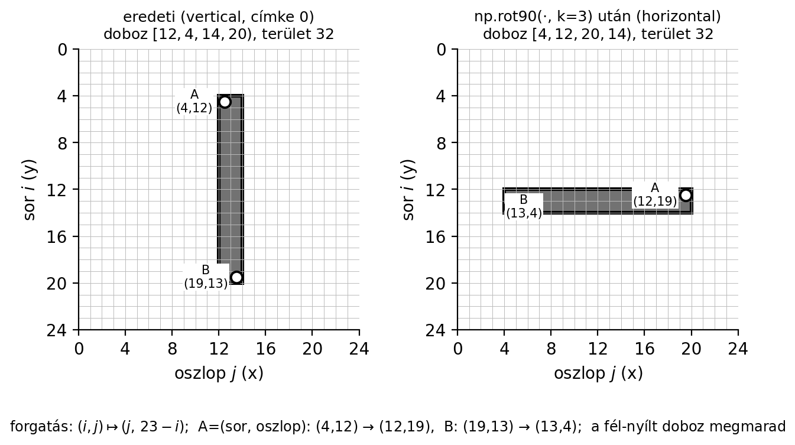

A 22.1. Adateredet, címke és csoportos split egység rögzítette, hogy a függelék A. szakaszában leírt GlyphLab 360 képéhez 180 független jelenet tartozik, és a splitet scene-szinten kell nyilvántartani. Ott a címke és a rekord kapcsolatáról a hosszanti, adatkezelési oldalon volt szó. Most ugyanennek a szerződésnek a transzformációs oldalát vizsgáljuk: ha a betanított modellt egy augmentációs pipeline-on keresztül tápláljuk, mikor marad a kimeneti címke változatlan, és mikor változtatja meg a transzformáció magát a feladatot?
A 21.3. Dropout, súlyregularizálás és augmentáció a regularizáló eszközöket úgy vezette be, hogy az augmentációt csak megemlítette. A 10.2. Affín réteg és aktiváció backward a backward VJP-szabályainál a batch- és broadcast-műveleteket kezelte; ott minden tenzorműveletnek egzakt, indexelt definíciója volt. A 18.2. Batch normalization train és eval módban pedig a BatchNorm train/eval kettősségénél hangsúlyozta, hogy ugyanaz a forward-képlet különböző üzemmódban más statisztikát használ. Ugyanez a minta tér vissza az augmentációban: ugyanaz a geometriai művelet egészen más szerződést teljesít, ha a címkét, a maszkot és a dobozt is transzformáljuk vagy éppen nem.
Induló kérdés. A GlyphLab osztályai: 0 = vertical, 1 = horizontal, 2 = diagonal. Ha a 0. osztályú képet 90 fokkal elforgatjuk, a megjelenő gerenda vízszintes lesz. Az eredeti címke 0 maradhat-e? A becslését a kézi példa után ellenőrizheti: ott a számítás nem szorzás, hanem egy címketér-leképezés felírása lesz.
Definíció (augmentáció). Legyen egy kép-címke pár, ahol (a batch-nélküli GlyphLab-konvencióban ), a magasság, a szélesség, pedig a megengedett képek halmaza. Az augmentáció egy adattranszformáció, amelyet a tanítási adatfolyamban a minibatch betöltésekor alkalmazunk, nem előre elmentett fájlként. A célja a gyakorlati variabilitás növelése a tényleges adatgyűjtés nélkül; a modell így ugyanazt a tanítópéldát több realizációban láthatja.
A transzformáció akkor része a szerződésnek, ha külön mondjuk meg, hogy milyen objektumra hat. Két különböző, nem felcserélhető objektumról van szó: a feladat címkéjéről, amelyet az címkézőfüggvény rögzít, és a tanított modell kimenetéről, amelyet a pontszámfüggvény ad.
Definíció (címkemegőrző transzformáció). A transzformáció akkor címkemegőrző az adott tanítási feladatra, ha minden olyan párra, ahol és értelmezve van -en, a transzformált képhez is az osztály tartozik. Rövidebben: a feladat címketér-leképezése kielégíti az
egyenlőséget minden megengedett -re; a gyakorlatban ezt a tanítási halmaz elemein ellenőrizzük.
A jelölés szándékosan „az adott feladatra” szól. A definícióban a feladat címkézőfüggvénye, nem a tanított modell. Például a GlyphLab feladatban a vonás áthaladási irányát adja, és ez a modell címkéjének értelmezését rögzíti, függetlenül attól, hogy a betanított súlyok mit jósolnak. Két rövid megjegyzés a definícióhoz:
A szerződés egy konkrét, reprodukálható pipeline-ban ellenőrizhető: minden olyan -re, amelyre a transzformációt megengedjük, a transzformált képhez is az címkének kell tartoznia a céltenzorgenerátor szerint; ez a definíció közvetlen következménye, nem külön teszt. A szakirodalomban ezt a tulajdonságot gyakran label-preserving (címkemegőrző) transzformációnak nevezik; a PyTorch dokumentációja [D08] a Dataset és DataLoader folyamatában a transzformációk általános alkalmazását rögzíti, de a címke- és annotáció-szinkronizálást a felhasználó szerződéseként kezeli. Az adott transzformációt megvalósító API pontos paramétereit a hallgató a telepített könyvtár dokumentációjában ellenőrzi (a torchvision transzformációit a torchvision.transforms oldal írja le).
A crop művelet az indexek leszűkítése. Egy kivágási ablakot fél-nyílt, nullától indexelt intervallumokkal adunk meg: az sorral és az oszloppal kezdődik, és sort, valamint oszlopot fog át. A 22.1. Adateredet, címke és csoportos split alfejezet doboza fél-nyílt xyxy alakú; a kivágási ablak ezzel ekvivalens xyxy alakja , ahol az első két koordináta a sor–oszlop sorrend miatt felcserélődik. A kivágott kép
A magasságra a fél-nyílt feltétel: , azaz a kivágott terület az intervallum. Az output alakja .
A crop címkemegőrző az osztályozási feladatra, ha a kivágás választását az osztályt meghatározó tartalomtól függetlenül rögzítjük, és a kép tartalma elégséges a címke eldöntéséhez. Ahhoz, hogy ezt a feltételt ne csak heurisztikusan mondjuk ki, a tanulási szerződés szempontjából rögzítjük: a transzformáció akkor elfogadott, ha a kivágás utáni kép az eredeti -ből származó, a cél szempontjából reprezentatív mintája. A crop önmagában nem címkemegőrző eljárás, hanem indexhalmaz-művelet; a címkemegőrzés a kivágási politikától függ. Például a GlyphLabban egy olyan kivágás, amely a gerendát teljesen elhagyja, megszünteti a címkét hordozó tartalmat, tehát megsérti a szerződést, még ha a pixelformát tekintve simának is tűnik.
A hivatalos követelmény a kép és a társannotáció szinkronja esetén szigorúbb, hiszen a maszkhoz és dobozhoz is ugyanazt az indexhalmazt kell használni. A kézi példában a doboz transzformációját külön számoljuk ki.
A resize a diszkrét kép rácsát egy másik rácsra képezi. A
legátláthatóbb, matematikailag is következetes fogalom a
bilineáris interpoláció: az
intenzitást az
diszkrét pozíciójú minta folytonos interpolációjának tekintjük, és az
kimenet
mintájához a forrásrácsban keressük a hozzá tartozó folytonos
koordinátákat. Pontosabban, az output
pixel centruma a forrásrács
koordinátájára esik, ahol
(sor) és
(oszlop); ez a pixelcentrum-konvenció (align_corners=False
a PyTorchban). A részletes kernel pozíciófüggő: a
súlyok a forrás- és célrács koordinátáitól függenek, a
pixelintenzitásoktól viszont nem. Rögzített be- és kimeneti rács mellett
ezért a resize az intenzitásokra nézve lineáris
operátor, és a kép minden csatornájára ugyanaz:
ahol a
súlyok a célrácstól függő, bilineáris kernel. Tehát
minden
valós számra és azonos méretű
képre; a bilineáris interpoláció koordinátafüggése ezen nem változtat.
Valóban nemlineáris lépés csak az, ami az eredményre utólag hat, például
a
-be
vágás (clipping) vagy a kerekítés uint8-ra; ezeket a
szerződésben külön kell megnevezni. Az antialias-szűrő mérete a
skálafaktortól függ, nem a képtartalomtól, ezért rögzített be- és
kimeneti rács mellett a súlyai is rögzítettek, és a művelet lineáris
marad. A 14.1. Stride, padding, dilation és kimeneti
méret padding/stride képletétől eltérően itt nincs konvolúciómag –
ez a művelet mintavételi átkonvertálás, nem szűrő.
A resize akkor címkemegőrző az osztályozási feladatra, ha a feladat nem függ egy képpontos részlet abszolút méretétől, csak a geometriai tartalom relatív konfigurációjától. Ez a GlyphLab orientációs feladatán teljesül: a gerenda függőleges vagy vízszintes iránya egy kisebb rácson is olvasható. Az alábbi feltételt írásban is rögzítjük: a resize akkor engedhető meg, ha a célrács felbontása nem esik a címkét hordozó struktúra megkülönböztetéséhez szükséges minimális felbontás alá, azaz a kicsinyítés nem tünteti el a címkét meghatározó részletet. Ha például -ről -re kicsinyítünk, egy vékony, 2 pixel vastag vonal eltűnhet; az ilyen resize nem címkemegőrző, mert a cél-információ megsemmisül. Ez a megállapítás heurisztika, nem bizonyított tétel: a megengedett minimális méretet a konkrét generátor vastagságeloszlása ellenőrzi, amit a 22.1. Adateredet, címke és csoportos split generátorának dokumentációja rögzít.
A horizontal flip a szélességi indexet cseréli (bal–jobb csere), geometriailag a függőleges tengelyre tükröz; a „horizontal/vertical” elnevezés a változó irányt jelöli, nem a tükörtengely nevét:
A vertical flip (fel–le csere, geometriailag a vízszintes tengelyre tükrözés) analóg:
A flip fontos tulajdonsága, hogy az osztályozási címkét csak az adott feladat hagyja meg, míg az annotációt szinkronban kell tükrözni. Ez a megkülönböztetés a jelen fejezet magja. Egy kép vízszintes tükrözése a vizuális tartalmat megőrzi, de a GlyphLabban a diagonal osztály csak az egyik ferde irányt tartalmazza. A GlyphLab ADATOK.md szerződése kifejezetten rögzíti: a 90 fokos forgatás a vertical és horizontal címkét felcseréli, és a diagonal osztály csak az egyik ferde irányt tartalmazza, ezért tükrözés/forgatás új célértelmezést igényelhet. A tükrözött diagonal már a másik ferde irány, ami egy másik feladatcímke lenne, nem a meglévő 2. osztály.
Állítás. Nem minden forgatás címkemegőrző minden osztályozási feladathoz. Konkrétan a GlyphLab orientációs feladatán a 90 fokos forgatás a vertical és horizontal osztályokat kölcsönösen felcseréli, így a transzformáció az eredeti címke megtartásával nem érvényes.
Bizonyítás. Legyen a GlyphLab feladat címkézője
,
ahol a 0 a függőleges, 1 a vízszintes, 2 az átlós vonalat rendeli a
képhez. Legyen
a képsík óramutató járásával megegyező 90 fokos forgatása; egy
képen ennek indexképlete
,
ami megfelel a np.rot90(x, k=3) műveletnek. A címke
definíciója szerint
a vonás áthaladási irányát adja vissza, ezért a bizonyítás csak ezt a
definíciót és a forgatás geometriáját használja. Egy függőleges, az
-tengely
mentén hosszan elnyúló vonal a forgatás után a
-tengely
mentén hosszan elnyúlt, azaz vízszintes vonal lesz:
A vízszintes vonalra szimmetrikusan:
Mivel tehát legalább egy -re, a transzformáció nem címkemegőrző a GlyphLab feladatára.
A bizonyítás a definiált célfeladat szintjén teljes; nem szükséges hozzá általános képi ontológia. Szándékosan mutattuk meg, hogy a címkemegőrzés feladattól függ, nem a forgatóképesség gyenge. Egy olyan feladatnál, ahol a cél a vonal jelenléte (nem annak iránya), a címkemegőrző lenne: a vonal jelen marad. A fontos üzenet tehát: a geometriai invariancia a cél definíciójához képest értendő.
Az intenzitástranszformáció a csatornán a tartományú intenzitásra hat, nem az indexre. Az egyszerű eltolás-skálázás például:
ahol és skalár, a kimenetet pedig a tartományra vágjuk vagy normalizáljuk. A GlyphLab képein a megkötés azt jelenti, hogy a transzformáció nem telítődik, azaz nincs levágás (clipping). Ha a megkötést elhagyjuk, a levágás a nagy intenzitású pixeleket azonos szintre hozhatja, és ezzel a vonal eltűnhet; a levágás tehát a látható tartalmat is megszüntetheti. Affin intenzitástranszformáció a vonal geometriai helyzetét nem változtatja meg, ezért a fényerő- (brightness) és kontrasztváltoztatás az orientációs címkét önmagában nem sérti; a valódi feltétel az, hogy a vonal észlelhető maradjon. Fontos korlát: ha az intenzitásművelet a zaj szintjét a kép szubjektív osztályozhatóságán túl növeli, a cél címkéje már nem az eredetiből igazoltan levezethető. Ez intenzitásnál és zajosításnál észlelhetőségi feltétel, és a fejezetben mint ellenőrizendő heurisztikát jelöljük.
A normalizálás és az intenzitás-skálázás közötti különbség: az előbbi a modell numerikus bemenetét skálázza, az utóbbi a kép vizuális tartalmát módosítja. A címkemegőrzés szempontjából a minden képen ugyanazzal az affin intenzitástranszformációval végzett normalizálás akkor megengedett, ha a kép normája nem a címke döntő forrása. A GlyphLab feladatban a címkét az átvonuló iránya szolgáltatja, nem az átlagos fényesség, ezért a normalizálás önmagában megengedhető.
A maszk és doboz ugyanazon képhez tartozó annotáció. A 22.1. Adateredet, címke és csoportos split szerint a maszk az előtér 0/1 döntése, a doboz a legszűkebb befoglaló téglalap fél-nyílt xyxy formában. Ha a kép indexeit transzformáljuk, a maszk és doboz indexeit ugyanazzal a geometriai leképzéssel kell transzformálni, különben a kép-pozíció és az annotáció elcsúszik.
A szinkronizáció pontos formája a következő. Legyen a geometriai index-leképezés , amely az output kép minden indexéhez egy inputpozíciót ad. Ha a maszkot a kép transzformációjával azonos módon transzformáljuk, akkor a címke-annotáció ugyanarra a vizuális objektumra vonatkozik. A doboz esetében ez azt jelenti, hogy a sarkokat is a -nak megfelelően kell leképezni, figyelve a fél-nyílt intervallum konvencióra.
Ha a transzformáció szöget vagy méretet változtat, a maszkot újra kell mintavételezni. A maszk 0/1 értékeit legközelebbi szomszéd (nearest) interpolációval kell transzformálni, mert a bilineáris interpoláció köztes értékeket (például 0{,}5-öt) hozna létre, amelyek nem tartoznak egyik osztályhoz sem. A dobozt nem interpoláljuk: a sarkait a geometriai leképezéssel számoljuk át, majd tetszőleges affin transzformáció esetén egész indexekre kerekítjük; flip és 90 fokos forgatás esetén a kerekítés pontos, mert az indexek egészek maradnak.
Példa (doboz horizontal flip). Legyen a kép szélessége . Egy doboz tükrözött alakja:
A fél-nyílt konvenciót a tükrözés is megőrzi, ha a pixelindexekkel számolunk: a doboz az indexű pixeleket tartalmazza, a tükrözött index , azaz éppen a fél-nyílt tartomány (a folytonos koordinátás leképezés ezzel szemben balról nyílt, jobbról zárt intervallumot adna, ezért itt az indexszámolás a mérvadó). A kézi példa ezt számolja ki.
A gyakori tévedés az, hogy a képhez egy véletlen transzformációt választunk, a maszkhoz/dobozhoz pedig egy másik, tőle független véletlent. Ez hibás tanítópárt eredményez, mert a kép és az annotáció különböző geometriai kölcsönhatásnak van kitéve. Az F4 feladat pontosan ezt a hibát lokalizálja.
Tekintsünk egy -es, vertical osztályú képet. A vonal két pixel széles és a szemléltetés kedvéért 16 pixel hosszú (a valós generátor vonalai 7–10 pixelesek, a számolás menete ugyanaz), a és oszlopban fut függőlegesen. A címke 0. A doboz, mint a vonalat befoglaló legszűkebb téglalap:
Azaz a vonal a 12. és 13. oszlopban, a 4. és 19. sorban látható (a fél-nyílt intervallum szerint már nincs benne).
Az óramutató járásával megegyező 90 fokos forgatás
(np.rot90(x, k=3)) egy
képet
képpé alakít, és a sor–oszlop indexpárt így képezi le:
Az új sorindex tehát a régi oszlopindex (), az új oszlopindex a régi sorindex tükre (). A dobozra: a régi oszloptartományból az új sortartomány lesz, ; a régi sortartományból pedig az új oszloptartomány , azaz , mert esetén , és esetén . Az xyxy sorrendben az új doboz
A szélesség és a magasság szerepet cserél, a terület változatlan: .
A példában :
Az új doboz a 12. és 13. sort és a 4–19.
oszlopot fedi: két pixel magas, 16 pixel széles
vízszintes sáv, területe
,
ugyanannyi, mint az eredeti
.
Ez éppen a vízszintes vonal; a címke most 1 kellene hogy legyen, a 0
címkét meghagyni nem szabad, mert a transzformáció a címkét
megváltoztatta. A példa címketér-leképezése a vertical/horizontal részen
,
,
a diagonal osztályon pedig a másik ferde irány; a transzformált képhez
tehát
tartozik, nem
.
Ellenőrzés: a dobozból képzett
-es
bináris maszkot np.rot90(mask, k=3)-mal forgatva, majd a
legszűkebb dobozt újraszámolva szintén
adódik, a maszk elemszáma 32 marad.

Előfeltételek. Python 3.12, a lab/
csomag telepítve (cd lab && uv sync), NumPy 2.3.5.
A lock fájl (lab/uv.lock) ezeket a verziókat telepíti; a
fejezetben közölt mért kimenetek a könyv ellenőrző környezetéből
származnak (Python 3.12.3, NumPy 2.5.4, pandas 3.1.0, torch 2.15.0+cpu).
A két környezet a laborokban ugyanazt a kimenetet adta; eltérés esetén
az utolsó jegyek különbözhetnek (loss kb.
,
accuracy egy megfigyelési egységnyi). Szükséges fájlok:
data/images.npy és data/metadata.csv; csak a
train splitet használjuk. A futtatás a szakaszban megadott
n086_rotation_check.py szkripttel történik; várható
futásidő CPU-n néhány másodperc, a tényleges időt a futás naplózza.
A jelen alfejezethez a következő labort írjuk elő. A labor a
lab könyvtárban dolgozik, CPU-s NumPy-vel.
Protokoll. A gyakorlat célja: a GlyphLab train-képből válasszon ki egy vertical és egy horizontal képet, és szemléltesse egy konkrét páron a 90 fokos rotáció címkeváltoztató hatását.
Lépések.
python3 -c "import numpy as np; print(np.__version__)"
ellenőrzi a NumPy-verziót. A labor Python 3.12 és NumPy 2.x verziót
feltételez (lásd az Előfeltételek bekezdést), CPU-n.data/images.npy-ből töltődnek be:
np.load("data/images.npy"); a train indexek
metadata.csv-ből.np.rot90(img, k=3) (alapértelmezett tengelyek); egy
tömbön np.rot90(x, k=3, axes=(1,2)), egy
batch-en pedig np.rot90(x, k=3, axes=(2,3)), mert a
csatorna- és a batch-tengely nem foroghat.A lépések futtatható ellenőrzése:
# lab/n086_rotation_check.py — munkakönyvtár: lab/
import csv
import numpy as np
images = np.load("data/images.npy") # (360,1,24,24) float32
labels = np.load("data/labels.npy") # (360,) int64
with open("data/metadata.csv", newline="") as f:
rows = list(csv.DictReader(f))
rows.sort(key=lambda r: int(r["index"]))
split = np.array([r["split"] for r in rows])
train = split == "train"
for want in (0, 1): # vertical, horizontal
i = int(np.flatnonzero(train & (labels == want))[0])
img = images[i, 0]
rot = np.rot90(img, k=3) # 90 fok, óramutató szerint
assert rot.shape == img.shape
col0, row0 = img.sum(axis=0), img.sum(axis=1)
col1, row1 = rot.sum(axis=0), rot.sum(axis=1)
assert abs(col0.max() - row1.max()) < 1e-4
assert abs(row0.max() - col1.max()) < 1e-4
axis = ("oszlopkoncentrált (vertical)" if col1.max() > row1.max()
else "sorkoncentrált (horizontal)")
print(f"eredeti címke={want}: colmax={col0.max():.2f} rowmax={row0.max():.2f}")
print(f"rotált: colmax={col1.max():.2f} rowmax={row1.max():.2f} -> {axis}")A futtatott kimenet (Python 3.12.3, NumPy 2.5.4, CPU, a rögzített GlyphLab adaton):
eredeti címke=0: colmax=9.57 rowmax=3.76
rotált: colmax=3.76 rowmax=9.57 -> sorkoncentrált (horizontal)
eredeti címke=1: colmax=4.65 rowmax=8.60
rotált: colmax=8.60 rowmax=4.65 -> oszlopkoncentrált (vertical)A 0 címkéjű (vertical) képből np.rot90 után
sorkoncentrált, azaz horizontal kép lesz, a címke viszont változatlanul
0; a három assert a projekciós profilok
felcserélődését rögzíti. Ez a forgatási állítás kézzel követhető, mért
példája.
Ellenőrzött jelentés helye. A fenti ellenőrzés a
rögzített GlyphLab adaton lefutott; a laborban nincs véletlen, a képek
float32-esek, a generátor verziója 1.0, a generáló seed 20261020, és
csak a train splitet használjuk. A tanuló a saját futtatásának
eredményét a jegyzékébe írja; ezt a n086_rotation_check.py
kimenete rögzíti.
Az F5 kísérlettervezési feladat kötelező sablonja. A válaszban adja meg a hipotézist; a független és a függő változót; a kontrollt vagy baseline-t; a modellarchitektúrát, az optimalizálót, a tanulási rátát és az epochszámot; a seedek számát és konkrét értékét; a metrikát és a megfigyelési egységet; az előre rögzített, számmal megfogalmazott döntési szabályt és a statisztikai próbát; valamint az erőforráskeretet. Ha a feladat nem tanít modellt, a tanítási recept helyett az adott eljárás kontrollját, döntési szabályát és erőforrását kell kitölteni.
A 16.1. Eltolási equivariance és invariance equivariance és invariance fogalmával szemben itt a címkemegőrzésről van szó. Magyarázza el röviden a különbséget, és adja meg, hogy a 90 fokos rotáció a GlyphLab osztályozón melyik módon sérti a címkemegőrzést: a címke definícióját vagy a modell pontszámát változtatja meg?
Adott egy -es GlyphLab kép, rajta egy 9 pixel hosszú, 45°-os diagonal vonallal, amely a bal felső sarokból a jobb alsóba tart. A doboz . Számítsa ki a 90 fokos rotáció utáni dobozt, és ellenőrizze a fél-nyílt intervallum tartalmi értelmét.
Írjon Python-függvényt, amely egy
tenzoron (NumPy-ndarray vagy torch.Tensor) a vízszintes
flipet hajtja végre a
tengelyre. A függvény inputja a tenzor, a kimenete ugyanolyan dtype és
alak; az ellenőrzéshez használjon egy
bemenetet a
panelre. Várt eredmény: minden sor fordított sorrendben.
A következő pszeudokód szegmentálási augmentációt próbál létrehozni. Keresse meg a hibát, és indokolja, miért keletkezik hibás tanítópár.
for x, mask in loader:
angle = np.random.uniform(0, 90)
x_aug = rotate(x, angle)
mask_aug = rotate(mask, angle + 5)
train_step(x_aug, mask_aug)A GlyphLab orientációs feladatban a class-stratified split 240 train, 60 val és 60 teszt képet ad (a tesztet ez a feladat nem használja). Tervezzen kísérletet annak ellenőrzésére, hogy egy kiválasztott flip-augmentáció a diagonal osztályra címkét változtat-e. Ne hajtsa végre teljes körűen; a protokollhoz írjon megfigyelési egységet, baseline-t, metrikát és a konklúzió érvényességi határát.
A címkemegőrzés a feladat címketér-leképezésére vonatkozik: a transzformált kép címkéje megegyezzen. Ezzel szemben az equivariance/invariance a modellfüggvény és a transzformáció felcserélhetőségét rögzíti. A 90 fokos rotáció a GlyphLab cél definícióját változtatja meg, mert az orientáció címkéje maga az irány; a modell viselkedése ettől független kérdés. A feladatcím már a kalibrált cél definíciójában sérül.
A diagonal doboz a 0-tól számozott, felülről lefelé indexelt rácsban a 7–15. oszlopot és a 6–14. sort fogja be; egy 45°-os vonal doboza négyzet, . A 90 fokos óramutató szerinti forgatás képlete , a kézi példa szerint az új doboz :
A fél-nyílt intervallum most a 7–15. sort és a 9–17. oszlopot jelöli;
a doboz továbbra is
-es,
a terület (81) változatlan, a szélesség és a magasság egyenlő marad. A
np.rot90(mask, k=3) után újraszámolt doboz ugyanez. A
forgatott képen ez éppen a bal alsó sarokból a jobb felsőbe tartó
diagonal; a forgatás a geometriai irányt a másik ferde irányba vitte,
így a diagonal osztály eredeti iránya a forgatás után már nem áll fenn.
A válasz konzisztens a forgatási állítással: a doboz szinkronban
transzformálódott, a címke iránya azonban megváltozott.
A NumPy-megoldás teljes futtatható ellenőrzése:
import numpy as np
def horizontal_flip_nchw(X):
# X: ndarray, N x C x H x W
return X[..., ::-1].copy()
x = np.arange(24, dtype=np.float32).reshape(2, 1, 3, 4)
# A feladat panelje: [0,1,2,3], [4,5,6,7], [8,9,10,11]
x[0,0] = [[0,1,2,3],[4,5,6,7],[8,9,10,11]]
x[1,0] = [[12,13,14,15],[16,17,18,19],[20,21,22,23]]
y = horizontal_flip_nchw(x)
print(y[0,0].tolist())
# [[3.0, 2.0, 1.0, 0.0], [7.0, 6.0, 5.0, 4.0], [11.0, 10.0, 9.0, 8.0]]A torch.Tensor bemenethez a X[..., ::-1]
negatív lépésközű indexelés nem használható
(ValueError: step must be greater than zero), és a
Tensor-nek nincs .copy() metódusa; a helyes
megoldás a torch.flip:
import torch
def horizontal_flip_nchw_torch(X):
# X: torch.Tensor, N x C x H x W
return torch.flip(X, dims=(-1,))A futtatott ellenőrzés (Python 3.12.3, NumPy 2.5.4, PyTorch
2.15.0+cpu) a két implementációra ugyanazt a kimenetet adja:
[[3.0, 2.0, 1.0, 0.0], [7.0, 6.0, 5.0, 4.0], [11.0, 10.0, 9.0, 8.0]].
Az ellenőrzés három külön dolgot vizsgál. (1) Másolat: a
[..., ::-1] indexelés nézetet ad, a .copy() új
puffert, tehát np.shares_memory(x, y) hamis. (2)
dtype: az indexcsere nem változtat rajta, a kimenet float32
marad. (3) Kontiguitás: a nézet negatív stride-ú, nem
C-kontiguus; a .copy() C-rendű, kontiguus tömböt ad
(y.flags['C_CONTIGUOUS'] igaz), amit a későbbi
np.ascontiguousarray már nem másol újra. A kimenet float32,
shape
.
A torch.flip ugyanígy új puffert ad, a dtype és az alak
változatlan; a kontiguitás-vizsgálat a NumPy-változatra vonatkozik. A
tolerancia itt nincs, mert az indexcsere egzakt.
A hiba a kép és a maszk különböző szögű elforgatása.
A mask-ra angle + 5 jut, tehát a
pixelannotáció öt fokkal más pozícióba kerül. Ettől a maszk már nem a
valódi előtér: a modell hibás célt tanul, mert a kép előterét a maszk
elcsúszott helyén, a háttér egy részét pedig előtérként látja. A
veszteség csökkenése ezen a hibás célon nem javítja a szegmentációt. A
javítás: a két forgatás egy közös szöggel, azonos interpolációs
konvencióval futtasson; a maszkra a Mask és box szinkronizáció
bekezdés szerint legközelebbi szomszéd (nearest) interpoláció
való, a képhez bilineáris is lehet. A visszaellenőrzéshez ki lehet
számolni a transzformált maszk és a transzformált kép előterének
átlapolását, vagy egyszerűen egy mini batchre a feladat dobozát is
szinkronban transzformálni és konzisztenciáját ellenőrizni.
Kérdés: a horizontal flip a GlyphLab diagonal osztályon címkét változtat-e?
Megfigyelési egység: scene_id, mert a
két nézet ugyanazon jelenetből származik; a kísérlet a train split 40 és
a val split 10 diagonal jelenetét vizsgálja (jelenetenként két nézet,
azaz 80, illetve 20 kép).
Baseline: a nem augmentált train spliten tanított kis ConvNet, a validációra mérve, a 16.1. Eltolási equivariance és invariance és 12.4. III. ellenőrző pont: önállóan tanuló kis háló eljárásához hasonlóan. Változó tényező: a flip mint transzformáció engedélyezése a betöltő pipeline-ban.
Metrika: az elsődleges mennyiség a címkeváltozási arány a diagonal osztályon: a transzformált képek közül mekkora hányadra teljesül . Ezt a címkézőfüggvény szintjén, a generátor geometriai definíciójából kell meghatározni, nem a modell jóslatából; a modell predikciója csak másodlagos diagnosztika lehet. A másodlagos metrika a per-image osztályozási pontosság a transzformált val képeken, amely azt mutatja, hogyan viselkedik a tanított modell, de a címke kérdését nem dönti el. A cél olyan transzformáció, amely a diagonal osztály címkéjét megtartja.
Protokoll: a train és val splitet a
scene_id alapján rögzítjük. A diagonal osztályra szűrt
halmazban a flip előtti és utáni célok változását a címkézőfüggvény
szintjén határozzuk meg: a generátor a ferde vonalat a bal felső
sarokból a jobb alsó felé haladó átló mentén rajzolja
(generate_data.py: a sor- és az oszlopindex együtt nő), a
horizontal flip ezt a bal alsó–jobb felső irányba viszi. Mivel a 2.
osztály csak az egyik ferde irányt tartalmazza (ADATOK.md), a flip a
diagonal képek címkéjét megváltoztatja. Ezután a megengedett
transzformációt az osztályokra aszimmetrikusan definiáljuk: vertical és
horizontal osztályon a horizontal flip megengedhető, diagonalon nem.
Következtetési határ: a konklúzió a GlyphLab geometriai definíciójára vonatkozik, nem általános diagonal feladatokra. A generátor seedjével, verziójával és splitjével együtt megismételhető. A val split mindössze 10 diagonal jelenete miatt a pontbecslés bizonytalan; a konfidenciaintervallumot jelenetszintű bootstrapból kell számítani, nem képenkénti független mintából. A pontos kísérlethez a train/val split arányok az ADATOK.md-ben szerepelnek. A 90 fokos forgatásra az Állítás ad bizonyítást; a flipre ugyanilyen, a célfüggvény definíciójából következő érv érvényes: a horizontal flip leképezése a bal felső–jobb alsó átlót a bal alsó–jobb felső átlóba viszi, ez pedig nem a 2. osztály egyetlen ferde iránya, ezért . A kísérlet célja az lenne, hogy a pipeline-léptékű ellenőrzés mutassa a hatást, nem pedig a modell pontossága.
A megoldás rubrikája: korrekt scene-stratifikáció, a flip és a rotáció címkeváltozásának elkülönítése, az érvényességi határ és annak rögzítése, hogy az eredmény a cél definíciójából következik.
Rögzített terv (a fenti megoldás számszerű kiegészítése).
Elsődleges ellenőrzés (determinisztikus): a horizontal
flip a diagonal osztály címkéjét megváltoztatja; a címkeváltozási arány
a címkézőfüggvényből számolva a 120 train és a 30 val diagonal jelenet
mindegyikére pontosan 1,0 (assert), ezért itt nincs
statisztikai próba és nincs tanítás. Másodlagos kísérlet
(leíró): a flip-kezelés pontosságra gyakorolt hatásához egy kis
ConvNetet Adam optimalizálóval, lr=1e-3, 20 epoch és 32-es
batch mellett tanítunk, öt seeddel
(–),
a flip-kezelést csak a train betöltőben engedve; a pontosságkülönbséget
jelenetszintű páros bootstrap 95%-os CI-vel közöljük, és akkor tekintjük
érdeminek, ha a CI kizárja a 0-t (a 2 százalékpontnál kisebb
pontbecslést gyakorlatilag elhanyagolhatónak jelentjük). Erőforrás: CPU,
float32, két ág × öt seed = 10 futás, néhány perc.
Tipikus tévedés. Az a feltevés, hogy az augmentáció a vizuális hasonlóságot őrzi, ezért a címkét is. Az ellenpélda a 90 fokos rotáció: vizuálisan ugyanaz a vonal látható, de a feladat iránya megváltozott. Másik gyakori hiba: a flipet minden osztályra megengedni, mert a „vízszintes tükrözés nem változtat az ábrán”. A GlyphLab diagonal osztálya irányelvű, így a flip egy másik irányt ad.
Önellenőrzés. Válasszon egy képet a trainből, és forgassa 90 fokkal. Ha a transzformált képet az eredeti címkével adná be, a modell a képet az ellenkező irányba tartozónak tanulná. Ezt önellenőrzéshez a forgatási állítás és az F2 dobozpélda segítségével ellenőrizheti: a kép, a maszk és a doboz ugyanazt a geometriai transzformációt kapja.
Visszautalás. A 10.2. Affín réteg és aktiváció backward batch-reduction és broadcast-szabálya itt is él: ha az augmentációt a minibatch betöltésekor alkalmazzuk, a képet és a célokat együtt kell transzformálni, és a batch-művelet nem tompíthatja el a hibás párokat. A 18.2. Batch normalization train és eval módban train/eval különbség ahhoz hasonló, ahogy az augmentációt a gyakorlatban csak a train pipeline-ban érdemes futtatni, az eval pipeline-ban nem, vagy csak determinisztikusan. A 21.2. Learning rate és ütemezés üteme pedig arra figyelmeztet, hogy a training adat augmentációjának mennyisége és a learning rate schedule együtt befolyásolja a tanítási pályát.
A címkemegőrző transzformáció fogalma a feladat célfüggvényéhez, nem a vizuális hasonlósághoz kötött. A crop, resize és intenzitásváltoztatás akkor megengedett, ha nem semmisíti meg a cél szempontjából szükséges tartalmat; a flip csak a feladat szimmetriái szerint címkemegőrző; a 90 fokos forgatás a GlyphLab irányfeladatán a vertical és horizontal címkét felcseréli, a diagonal pedig más irányt jelöl. A kép, maszk és doboz minden geometriai transzformációjának ugyanazt az indexleképzést kell követnie; független véletlen transzformáció ellentmondásos tanítópárokat ad. Az augmentációt a gyakorlatban csak a train pipeline-ban alkalmazzuk; a tesztfolyamat valós eloszlását nem szabad augmentálni. A nyitó kérdésre a válasz: a 0. osztályú kép 90 fokos elforgatása után a címke nem maradhat 0, mert a vertical és horizontal osztály felcserélődik; ez a transzformáció nem címkemegőrző.
A 22.3. Zajos és hiányos címke a zajos és hiányos címke kezelésére tér át. Az ott tárgyalt címkebizonytalanság éppen abból a pontból ered, ahol a transzformáció már nem tudja garantálni a cél hűségét; az itt tanult szinkron és címkemegőrző eljárás a zajos címke kontrolljához is nélkülözhetetlen.
data/images.npy,
data/labels.npy, data/metadata.csv, a könyv
ADATOK.md szerződése szerint.